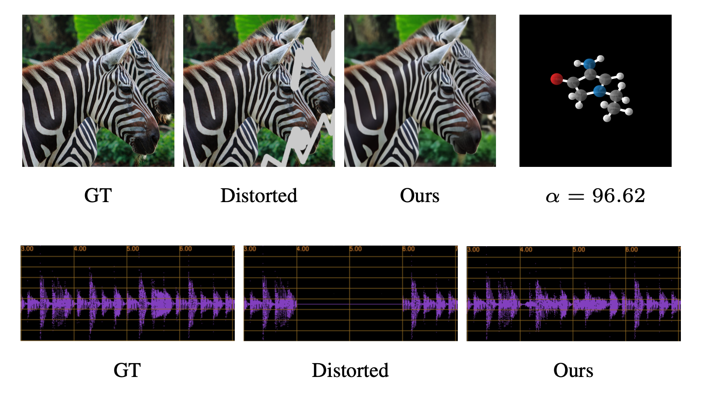
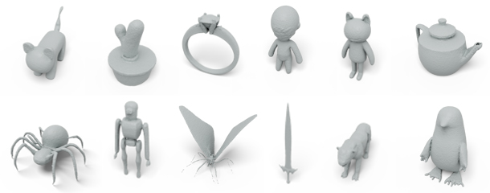
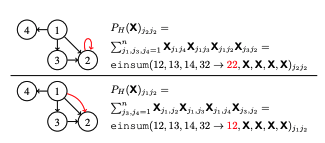

Publications

D-Flow: Differentiating through Flows for Controlled Generation
Heli Ben-Hamu, Omri Puny, Itai Gat, Brian Karrer, Uriel Singer, Yaron Lipman
International Conference on Machine Learning (ICML 2024)

Mosaic-SDF for 3D Generative Models
Lior Yariv, Omri Puny, Natalia Neverova, Oran Gafni, Yaron Lipman
Conference on Computer Vision and Pattern Recognition (CVPR) 2024

Equivariant Polynomials for Graph Neural Networks
Omri Puny*, Derek Lim*, Bobak T. Kiani*, Haggai Maron, Yaron Lipman (*equal contribution)
International Conference on Machine Learning (ICML 2023) Oral

Frame Averaging for Invariant and Equivariant Network Design
Omri Puny*, Matan Atzmon*, Heli Ben-Hamu*, Edward J. Smith, Ishan Misra, Aditya Grover, Yaron Lipman (*equal contribution)
International Conference on Learning Representations (ICLR 2022) Oral